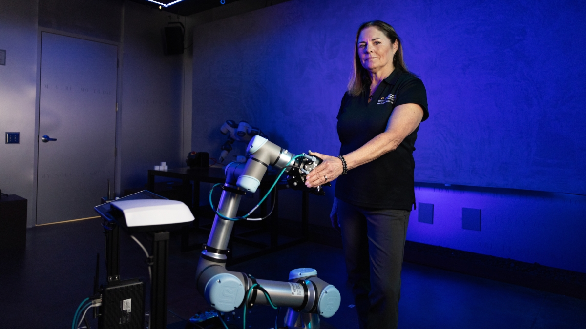

Understanding People. Engineering Better Systems.
Technology is only as effective as the people who interact with it. Arizona State University's Bachelor of Science in Human Systems Engineering explores the relationship between human behavior, technology, and the environments in which they operate.
Combining psychology, engineering, and research methods, students learn to evaluate human capabilities and limitations to improve usability, safety, and performance across complex systems.
Where Human Behavior Meets Technology
Human systems engineering connects the science of human performance with practical design challenges. Students develop skills in observation, experimentation, analysis, and problem-solving.
-
Human-Computer Interaction
Study how people interact with digital interfaces and how to improve their usability.
-
Cognitive Science
Explore how attention, perception, memory, and decision-making influence performance.
-
Research Methods
Apply experimental, statistical, and qualitative methods to investigate human behavior.
-
Human Systems Integration
Design systems that account for human capabilities, limitations, and needs.
Applying Human-Centered Thinking
Human systems engineering extends beyond traditional product design. Its principles can inform safer transportation, more effective medical environments, better workplace systems, and intuitive digital products.
By evaluating how people perform tasks and interact with their surroundings, human systems engineers can identify opportunities to reduce errors, improve efficiency, and create better experiences.
Engineer for the Human Experience
Develop the skills to investigate human performance and translate research into meaningful improvements. Discover how understanding people can help shape the future of technology.
Explore the Degree Program